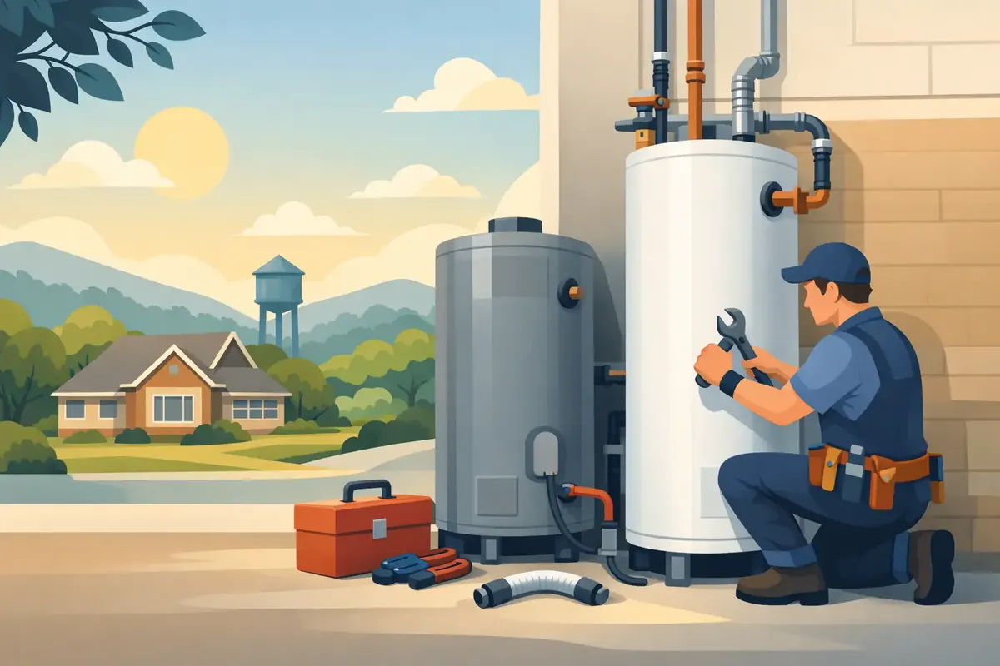

A cold shower is often the first warning, but it is rarely the only one. If you are searching for hot water heater replacement Woodbury TN homeowners can depend on, the goal is not simply to get hot water back. It is to choose a system that fits your household, your energy goals, and the space where it will be installed - without being surprised by avoidable costs or rushed decisions.
A water heater works quietly until it does not. When a tank begins leaking, the water turns rusty, or the supply runs out faster than usual, a prompt inspection can protect your home from water damage and help your family make a sound replacement decision.
When Is Water Heater Replacement the Better Choice?
Some water heater problems can be repaired. A worn heating element, thermostat issue, pressure-relief valve, or pilot-light problem does not always mean the entire unit has reached the end of its useful life. If the tank itself is in good condition and the repair is reasonable, repair may be the practical route.
Replacement becomes more likely when the tank is leaking. Water pooling around the base can come from a fitting or valve, but corrosion inside the tank can also create a permanent leak. Once the tank has failed, a repair will not restore its structural integrity. Replacing it before the leak grows can help prevent damage to flooring, drywall, stored belongings, and nearby rooms.
Age matters, too. Many traditional tank water heaters provide dependable service for roughly eight to 12 years, although water quality, maintenance history, and household demand all affect their lifespan. If an older unit needs a major repair, putting that money toward a new, warranted system may offer better long-term value.
Watch for these common signs that it is time to call a plumber for an evaluation:
- Rust-colored hot water or visible corrosion on the tank
- Rumbling, popping, or banging sounds caused by sediment buildup
- Hot water that runs out much sooner than it used to
- Repeated repairs or steadily rising operating costs
- Moisture, standing water, or active leaking around the water heater
No homeowner should have to guess whether a failing water heater is an emergency. A trained plumber can identify the source of the problem, explain the condition of the equipment clearly, and provide upfront options for repair or replacement.
Choosing the Right Hot Water Heater Replacement in Woodbury, TN
The right replacement is not always the biggest tank or the newest technology. Your household size, daily routines, fuel source, available installation space, electrical capacity, and budget should all be considered before selecting a model.
Traditional Tank Water Heaters
Conventional tank water heaters remain a dependable choice for many Woodbury homes. They store a set amount of heated water, commonly 40, 50, or more gallons, so the system is straightforward and familiar. Gas models can recover hot water quickly, while electric models may be a good fit where gas service is unavailable.
The trade-off is standby heat loss. Because the tank keeps water hot throughout the day, it uses energy even when no one is showering or washing dishes. Still, a properly sized modern tank unit can be a practical, cost-conscious solution for many families.
Tankless Water Heaters
Tankless water heaters heat water as it moves through the unit. They do not store a large reserve of hot water, which can reduce energy use and free up floor space. They are especially appealing for households that want longer stretches of hot water or need to reclaim room in a utility area.
Tankless is not automatically the best choice for every property. Proper sizing is critical because a unit must handle the number of fixtures running at the same time. A household may need more capacity if showers, laundry, and dishwashing often happen together. Installation can also require changes to gas lines, venting, or electrical service, so the initial investment may be higher than a standard tank replacement.
Heat-Pump or Hybrid Water Heaters
Heat-pump water heaters use electricity to move heat from surrounding air into the tank rather than generating all heat directly. This can make them highly efficient, particularly in suitable spaces such as garages, basements, or utility rooms with enough air volume.
They do have considerations. The equipment needs appropriate clearance, may produce a modest amount of noise, and can cool the air around it. In the right home, however, a hybrid unit can lower operating costs while providing the familiar storage capacity of a tank-style water heater.
Installation Details That Protect Your Home
Water heater replacement is more than removing an old unit and connecting a new one. Safe installation includes confirming fuel and electrical requirements, connecting the temperature and pressure-relief valve correctly, checking venting on gas equipment, and ensuring the unit is level, secure, and properly sized.
A professional installation also considers local code requirements and the condition of related plumbing components. If shutoff valves, supply lines, drain pans, expansion tanks, or vent connections are worn or outdated, addressing them during installation can prevent a new water heater from inheriting old problems.
For homeowners in Woodbury, water quality can be part of the conversation as well. Mineral sediment can collect at the bottom of a tank, reducing efficiency and contributing to noise. If hard water or sediment has affected your previous unit, ask about maintenance and water-treatment options that may help protect the replacement.
What to Expect From a Professional Replacement Visit
A respectful service visit should make a stressful problem easier to manage. The plumber should inspect the existing water heater, ask about your hot-water usage, and explain whether repair is still sensible. If replacement is recommended, you deserve clear choices rather than pressure.
Before work begins, ask for an upfront explanation of the recommended equipment, labor, required accessories, warranty coverage, and any needed updates to the installation area. If your water heater has failed unexpectedly, financing options may also help you restore dependable hot water without postponing a necessary repair.
During installation, care for your home matters. Professional technicians should protect the work area, remove the old unit responsibly, test the new system, and leave the space clean. Families should be able to ask questions comfortably and expect courteous language and conduct in their home.
Angle Stop Plumbing brings a veteran-owned, family-centered approach to water heater service across Middle Tennessee, backed by experienced plumbers, straightforward pricing, workmanship protection, and a No Foul Language Guarantee. Whether the need is urgent or planned, the focus should remain on dependable work and peace of mind.
Can Maintenance Help a New Water Heater Last Longer?
Yes. A replacement water heater still needs attention over time. Annual maintenance may include checking the anode rod, testing the temperature and pressure-relief valve, inspecting connections, and flushing sediment from a tank unit when appropriate. These routine steps can improve performance and help reveal small issues before they become costly leaks.
Tankless systems need maintenance too, particularly where mineral content can build up inside the heat exchanger. The exact schedule depends on the model, water conditions, and manufacturer guidance. A plumber can recommend a plan that matches the equipment installed in your home or property.
Landlords and commercial property managers should be especially proactive. A water heater failure can disrupt tenants, customers, employees, and daily operations. Planned replacement and routine inspections provide more control than waiting for a tank to rupture or a busy property to lose hot water without warning.
Do Not Wait for a Small Leak to Become a Major Problem
If your water heater is leaking, producing inconsistent temperatures, or nearing the end of its expected service life, schedule an assessment before the situation becomes more disruptive. The best replacement choice balances reliability, efficiency, household demand, and installation requirements - not just the lowest initial price.
A reliable supply of hot water supports the ordinary moments that keep a home running: morning showers, clean dishes, laundry, and a family’s daily routine. Addressing a struggling water heater now can keep those moments comfortable and protect your property from the kind of damage no family wants to face.